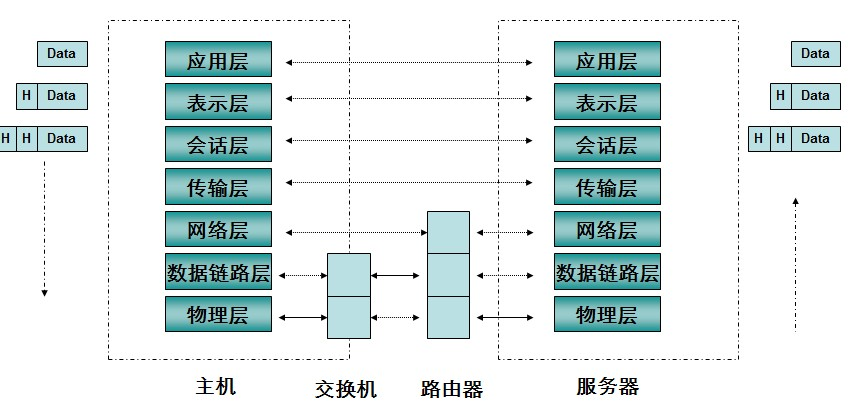

客户端发起一个请求的大致过程
客户机发起一次请求的时候： 客户机会将请求封装成http数据包-->封装成Tcp数据包-->封装成Ip数据包--->封装成数据帧--->硬件将帧数据转换成bit流（二进制数据）-->最后通过物理硬件（网卡芯片）发送到指定地点。 服务器硬件首先收到bit流....... 然后转换成ip数据包。于是通过ip协议解析Ip数据包，然后又发现里面是tcp数据包，就通过tcp协议解析Tcp数据包，接着发现是http数据包通过http协议再解析http数据包得到数据。
